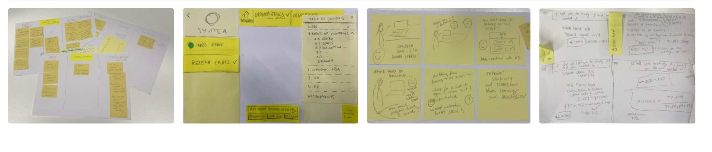

IU International University · AI study companion · 2025 – present · UX Lead
From exam-week tool to daily study companion
Syntea is the AI study companion of a university with 100,000+ distance learners. Students who used it early stayed. Most only found it days before an exam, too late to build a habit.

The problem
For the people using it
Students discovered Syntea when they were already in trouble: a few days before an exam, too stressed to learn a new tool. The product was useful. The relationship never formed.
For the business
Around 45% of students churn before finishing their degree. Students who used Syntea for three or more days in their first two weeks churned at 2.8% instead of 12%. That gap existed. Nobody owned it.
Project detail
How I worked
Map the whole journey, not the feature
I mapped the student journey from enrolment to exam in five stages and laid the four product teams against it. The gap was obvious once drawn: nobody owned the 14 days between enrolment and the first meaningful conversation, the window where students quietly decide whether Syntea is for them.

Turn one insight into a shared commitment
The churn difference was already in the data. My job was to make it impossible to ignore for the people who set priorities. It became the Golden Path: a commitment across all product teams to be present in every journey stage, not only exam week.
Give every team the same design language
Together with the teams I defined four experience principles for the AI companion, starting with “guide intent, don’t just interpret it”. They replaced four separate definitions of good with one.
Build discovery into the rhythm
Recurring student interviews, analysis of conversation quality, a shared insight repository, and AI-assisted synthesis across 22,000+ monthly users. Decisions stayed grounded in what students did this month, not last year.
Facilitate, then get out of the way
Alignment sessions across product, engineering and content turned principles into prioritisation decisions. My measure of success was that teams could argue from the same evidence without me in the room.
What it changed
What I took from it
The most impactful design work was not at the interface. It was identifying the 14-day window where students decided, invisibly, whether the product was for them, and owning it strategically. Three sub-projects came out of this: the habit loop, exam readiness, and exam admission.